Overview
Overview
Letters is a ready-to-use, distraction-free, real-time collaborative editor built on top of CKEditor 5 Framework and using CKEditor Cloud Services.
- Ready to use – It only requires minimal configuration and integration effort to use in a web page, CMS or a web application.
- Distraction-free – When designing Letters, we focused on keeping the interface clean and beautiful, at the same time maintaining high usability and providing the user with all necessary options.
- Real-time collaborative editing – Letters lets you edit the same document simultaneously and shows you the selection made by other users in real time. It also supports asynchronous collaboration allowing users to add comments and start discussions over the document.
Letters is a perfect implementation of the possibilities of CKEditor 5 Framework:
- The document model from the CKEditor 5 engine handles document editing with support for collaboration.
- CKEditor 5 plugins are mixed with some custom plugins and the default CKEditor 5 interface is enhanced with custom skins and panels using the CKEditor 5 UI library — which shows the flexibility and customizability of the Framework.
CKEditor Cloud Services handles the backend, including:
- Comments and discussions,
- Collaborative editing,
- Easy Image upload.
# Interface
When designing Letters, we focused on keeping the interface clean and beautiful. The user interface consists of three parts:
- The top bar, designed mainly for showing active users connected to the document.
- The main working space for text editing. Heavy, fixed toolbar at the top was abandoned in favor of light contextual toolbars shown next to the user selection.
- The sidebar which is empty unless comments are added to the content.
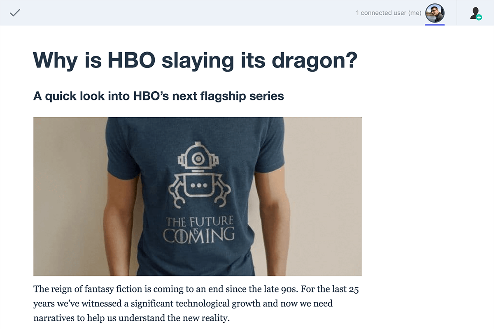
# Real-time collaboration
Letters lets you edit the same document simultaneously and shows you the selection made by other users in real time. Users connected to the document are displayed at the top of the application.
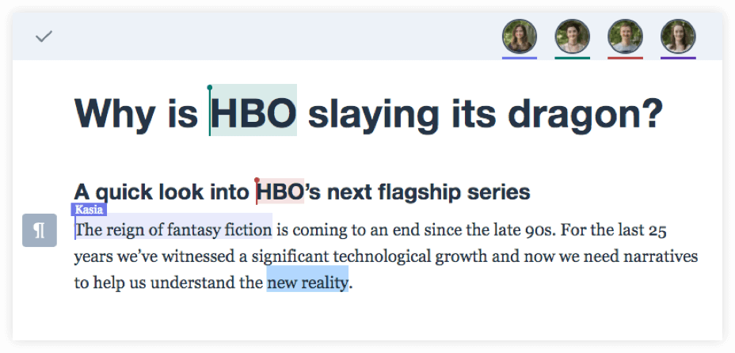
# Block toolbar
Letters comes with two toolbars. The first one is for block elements and is located on the left side of the interface. It allows for creating various block elements like headers or lists. It also lets you insert images.
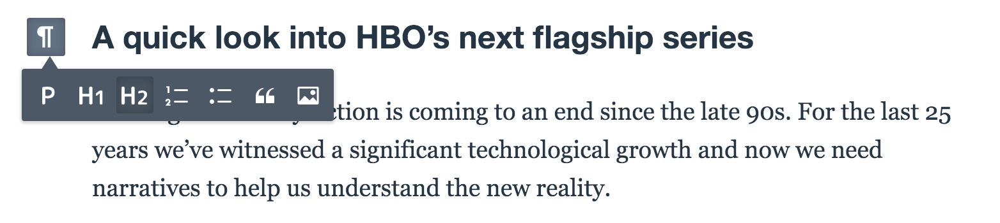
# Inline toolbar
The second type of the toolbar, the inline toolbar, shows up after you select some content. It lets you apply styles or add comments to the selection:
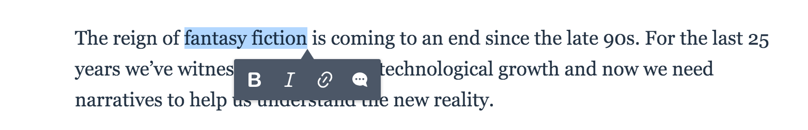
# Easy Image
Letters comes with a built-in Easy Image feature, which means that handling image uploads is available out of the box.
There are several ways for the end user to insert images in Letters:
- Pasting it from the clipboard.
- Dragging a file from the file system.
- Selecting it through a file system dialog after the Insert image button is pressed:
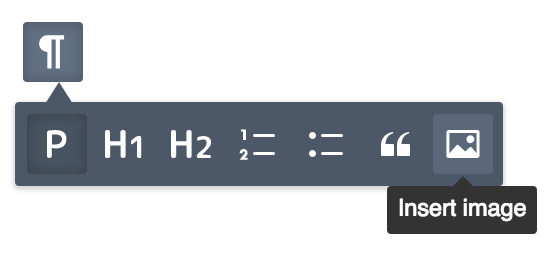
Letters is using responsive images in the content. With a single image upload, several optimized versions of that image are created after upload by Cloud Services, for different sizes of displays. All this is totally transparent to the end user who uploaded the image. Rescaled and optimized images are delivered through a blazing-fast CDN.
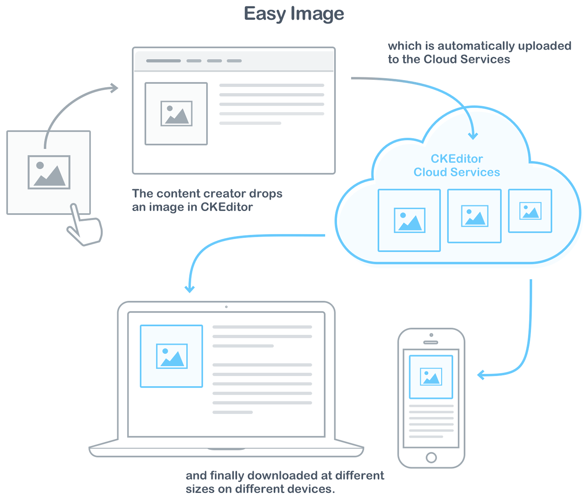# Image styles
Each image provides a contextual toolbar that lets the user apply styles to it. By default the user can choose between two styles:
- A full–width image without any CSS class.
- A side image styled with the
image-style-sideCSS class.
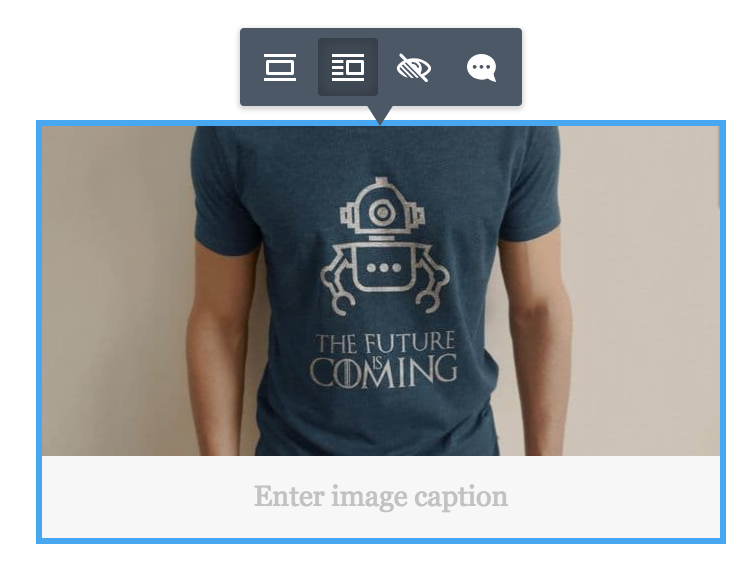
The exact styling of these two types of images can be controlled by your application. You can read more about the included image styles feature in the CKEditor 5 image styles documentation. Image styles in Letters are configurable in a similar way as in CKEditor 5, so you are not limited to the default configuration.
# Comments
Apart from real-time editing, Letters also supports asynchronous collaboration allowing users to add comments and start discussions over the document.
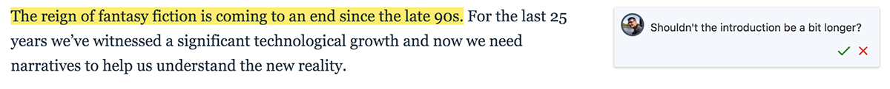
A sample comment thread:
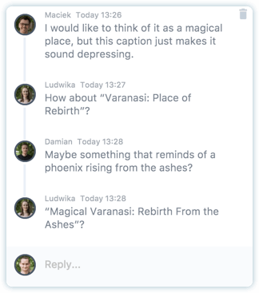
# Keyboard support
For maximum productivity and for better accessibility support, Letters comes with good keyboard support. This lets you perform repeatable tasks like text formatting much faster.
For a list of available keyboard shortcuts, check the CKEditor 5 keyboard support documentation.
As an addition to keyboard shortcuts available in CKEditor 5, Letters offers additional keyboard shortcuts designed exclusively for its features:
- The Esc key can be used to finish editing when running Letters in a dialog window.
- Once in comment mode, the Tab and Enter keys can be used to submit comments and replies.
# Autoformatting
Another productivity enhancement included in Letters is the autoformatting support. Whenever you want to make e.g. a header or a list, you may do it by just entering plain text in Markdown. Users familiar with Markdown syntax will find it intuitive, other users will soon find it attractive, too, as it can save a good amount of time.
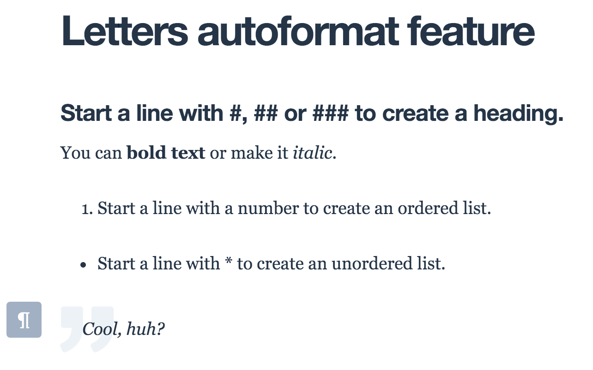
The autoformatting feature comes straight from CKEditor 5 and you can read more about it in the CKEditor 5 autoformatting feature documentation.
# Inviting users
The share button lets you invite users to collaborate within the same document in a convenient manner.
It can be turned on easily, read more in the Integration article.
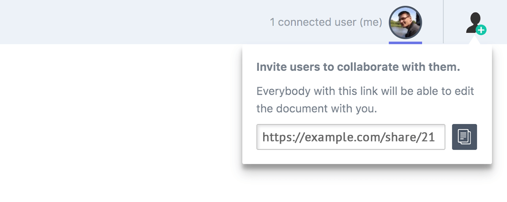
# Offline mode
The key requirement for a good collaboration experience is an internet connection. Without this it is impossible to transmit changes coming from active users to other users connected to the document. Letters detects if the internet connection is up and in case of any issues, it temporarily switches to offline mode.
Currently, in offline mode the content is available in read-only mode until the internet connection is back.
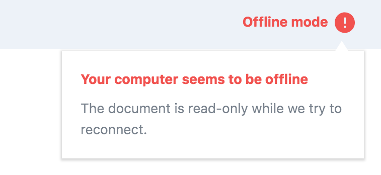
# Finish editing
One of the common scenarios is displaying the Letters interface in a separate overlay (dialog window).
In such cases, Letters offers a finish editing button to easily exit to the application from the editing window.
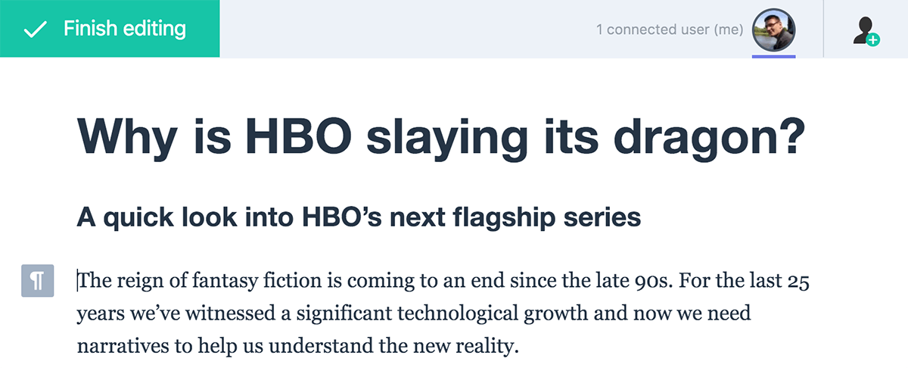
# Feedback!
If you are interested in Letters or would like to suggest some improvements, feel free to contact us.